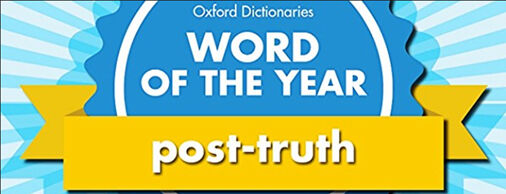
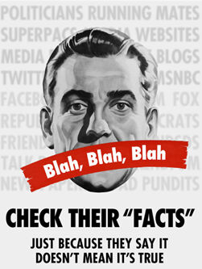
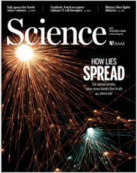

Trainees Edition
Trainers Edition
Trainees Edition
Trainers Edition
1.nodarbība: pēcpatiesība un viltus ziņas
Nodarbības apraksts
Šīs nodarbības galvenais uzdevums ir izskaidrot pēcpatiesības un viltus ziņu jēdzienus, kā arī to kā pēcpatiesība un viltus ziņas apdraud demokrātiju un sabiedrības un indivīdu labklājību.
Nodarbības sekundārais mērķis ir sniegt vadlīnijas pasniedzējiem, kuri vēlas izmantot nodarbības saturu, lai mācītu savus studentus.
Šie mērķi palīdz izprast pēcpatiesības laikmeta indivīdu informācijas patēriņu un sniedz vadlīnijas kā mācīt šo priekšmetu.
Studenti, kuri būs sekmīgi apguvuši šo nodarbību, spēs:
- saprast kāpēc viltus ziņas ir drauds demokrātijai un apdraud sabiedrību un indivīdu labklājību;
- saprast pēcpatiesības jēdzienu;
- definēt viltus ziņas;
- saprast cik ātri viltus ziņas izplatās;
- izprast saistību starp viltus ziņu un pēcpatiesības jēdzieniem;
- saprast kāpēc viltus ziņu jēdziens ir nepietiekošs, lai raksturotu informācijas piesārņojuma sarežģītību.
Pasniedzēji, kuri būs sekmīgi apguvuši šo nodaļu, izpratīs kā mācīt par pēcpatiesības laikmetu un viltus ziņām, kā arī apdraudējumu, ko tie rada demokrātijām un sabiedrību un indivīdu labklājībai.
Nodarbības struktūra
Nodarbība sastāv no šādām daļām:
- nodarbības apraksts (mērķi, satura izklāsts un mācību rezultāti),
- nodarbības struktūra;
- vadlīnijas studentiem;
- vadlīnijas pasniedzējiem (kā sagatavoties; izmantojamās metodes; ieteikumi);
- saturs (mācību materiāli un vingrinājumi);
- tests;
- informācijas resursi (izmantotie avoti, ieteicamie avoti un video).
Galvenie nodaļas uzdevumi - satura izklāsts un mācību rezultāti ir izskaidroti Nodaļas aprakstā. Vadlīnijas studentiem ietver instrukcijas un ieteikumus studentiem. Vadlīnijas pasniedzējiem palīdzēs pasniedzējiem dažādās mācību procesa fāzēs un nodrošina ar noderīgiem padomiem. Saturs ietver visus mācību materiālus un ar to saistītos uzdevumus. Tests sastāv no jautājumiem ar vairākiem atbilžu variantiem, kas palīdzēs studentiem novērtēt savu progresu. Avoti sastāv no izmantotājiem avotiem un ieteicamajiem avotiem tālākai pētniecībai. Izmantotie avoti ir materiālu saraksts, kas tikusi izmantoti mācību materiāla sagatavošanā. Ieteicamie avoti sastāv no papildu avotiem un video, kas ir ļoti ieteicami, lai uzzinātu vairāk par nodaļas tematu.
Vadlīnijas studentiem
Studentiem jāizlasa teksts, jānoskatās rekomendētie video un jāizpilda vingrinājumi. Vēlams ieskatīties ieteicamajos avotos, lai uzzinātu vairāk par tematu. Pēc iepazīšanās ar nodarbības saturu, ieteicam veikt testu, lai novērtētu savu progresu. Ja nepieciešams pārskatīt mācinbu materiālu vēlreiz.
Vadlīnijas pasniedzejiem
Vadlīnijas pasniedzējiem ietver ieteikumus un padomus, kā izmantot šīs nodarbības saturu macību procesā.
Sagatavošanās
Ieteicams sagatavot prezentāciju (PowerPoint/Prezi/Canva) par nodaļas tēmu, kas papildināta ar vizuāliem materiāliem (attēli un videoklipi) un pētījumos balstītu, faktisku informāciju.
Nodarbības uzsākšana
Studentu iesaistīšanai var noderēt īss tests (3–5 jautājumi), izmantojot platformu Kahoot, vai atsevišķu jautājumu uzdošana, izmantojot Mentimeter. Jautājumi var kalpot gan kā motivējošs instruments, gan kā rīks, ar kura palīdzību iespējams apzināt studentu esošās zināšanas un izpratni par nodarbības tēmu. Daži jautajumu piemēri: Ko nozīmē pēcpatiesība?
Nodarbības vadīšanas metodes
Mācību procesā var tikt izmantotas dažādas metodes, piemēram:
- Lekcija
- Diskusija
- Darbs grupās
- Pašrefleksija
Padomi pasniedzējiem
Iesildīšanās
Lai efektīvi iesaistītu dalībniekus mācību procesā un vienotos par to, kas tiks apgūts nodarbības laikā, tās sākumā var iesildošus uzdot jautājumus par tematu. Tas var tikt organizēts kā grupu darbs, lūdzot studentiem apkopot un pārrunāt idejas, vai arī individuāli, aicinot katru dalībnieku uzrakstīt savas idejas uz līmlapiņas.
Aktivitātes soļi:
- Pajautāt studentiem vai viņi kādreiz ir saskārušies ar jēdzieniem pēcpatiesība un viltus ziņas;
- Aicināt studentus paskaidrot saistību starp šiem jēdzieniem;
- Pajautāt studentiem par viltus ziņu iespējamo ietekmi uz demokrātiju.
Nodarbības mērķa paskaidrošana
Nodarbības mērķim jābūt skaidram, šajā gadījumā jēdzienu pēcpatiesība un viltus ziņas skaidrojums, to saistība un ietekme uz demokrātiju, indivīdiem un sabiedrību. Pēc iesildošajiem jautājumiem būs vieglāk izskaidrot nodarbības mērķi.
Nodarbības satura izklāsts
Prezentējot nodarbības saturu, pārliecinieties, ka mijiedarbojieties ar studentiem un iedrošiniet viņus aktīvi iesaistīties:
- pirms jēdzienu pēcpatiesība un viltus ziņas definīciju izskaidrošanas, lūdziet studentiem izstrādāt savas definīcijas;
- kad iepazīstiniet ar apdraudējumiem, ko rada pēcpatiesība un viltus ziņas, lūdziet dalībniekiem izvirzīt savas idejas;
- kad runājiet par saistību starp pēcpatiesību un viltus ziņām, lūdziet dalībniekiem izvirzīt savas idejas;
- prezentējiet pētniecības rezultātus, kad atklājiet, cik ātri izplatās viltus ziņas;
- pajautājiet dalībniekiem, kāpēc, viņuprāt, kāpēc viltus ziņas izplatās ātrāk kā patiesība.
Noslēgums
Sniedziet nodarbības kopsavilkumu un uzdodiet dažus jautājumus, kas palīdzētu izcelt būtiskāko satura izklāstā.
Sekojošais jautājums var palīdzēt:
- pajautājiet studentiem par draudiem, ko rada pēcpatiesības politika, uz emocijām balstītas informācijas patērēšana un viltus ziņas.
Kad noslēdzat nodarbību, pārliecinieties, ka studenti saprot, ka pēcpatiesības laikmetā objektīvie fakti mazāk ietekmē sabiedrisko viedokli kā emocijas un personiskie uzskati. Informācijas patēriņu pārsvarā vada cilvēku emocijas. Viltus ziņas izplatās ātrāk un sasniedz vairāk cilvēku kā patiesība. Jēdziens viltus ziņas ir nepietiekošs, lai raksturotu informācijas piesārņojuma sarežģītību.
Saturs: Pēcpatiesība un viltus ziņas
Ievads
Funkcionējoša demokrātija paļaujas uz izglītotiem un labi informētiem pilsoņiem. Taču mūsdienās pastāv informācijas pārpilnība (Canales, 2020), tāpēc informācijas iegūšanas un viedokļu veidošanas procesi ir īpaši nozīmīgi (Lewandowsky, Ecker, Seifers, Schwarz & Cook, 2012, p. 107). Mediji un internets nodrošina milzīgu informācijas apjomu, nododot atbildību par informācijas izvērtēšanu pašam indivīdam. No vienas puses ir apzināta vai neapzināta nepatiesas informācijas izplatīšana ir pieaugusi (Canales, 2020), savukārt no otras - indivīda ierobežotais laiks, kognitīvie resursi vai motivācija izprast sarežģītus tematus. Tā rezultātā maldīgie priekšstati kļūst par ikdienu. Vēl vairāk, kad šie maldīgie priekšstati ir izveidojušies, tos ir ārkārtīgi grūti izskaust (Ecker, Lewandowsky, Swire, & D. Chang, 2011, p. 570). Sekas tam var būt ļoti nopietnas. Ja sabiedrības lielākā daļa tic kaut kam, kas ir faktuāli nepareizs, misinformācija/dezinformācija var radīt politiskus un sociālus lēmumus (arī tādās nozīmīgās jomās kā izglītība, veselība un ekonomika), kas ir pretēji sabiedrības interesēm. Līdzīgi, ja indivīdi ir misinformēti, viņi visdrīzāk pieņems lēmumus, kas nav viņu un viņu ģimeņu labākajās interesēs.
Tāpēc misinformācija/dezinformācija tiek uzskatīta par nopietnu draudu demokrātijai (Filloux, 2017), ka arī sabiedrības un indivīdu labklājībai. Izpratne par to kāpēc misinformācija/dezinformācija ir radīta, kā tā izplatās un tās efektivitātes iemesliem ir nepieciešama, lai veiksmīgi cīnītos pret to.
Lai novērstu to, ka cilvēkus apmuļķo nepatiesības, ir svarīgi attīstīt kritiskas domāšanas un ziņu pratības prasmes.
Pēcpatiesība
Šobrīd tiek runāts par to, ka mēs dzīvojam pēcpatiesības laikmetā. Pēcpatiesība tiek definēta kā tāda, kas “attiecas uz vai apzīmē apstākļus, kuros objektīvie fakti ir mazāk ietekmīgi sabiedriskā viedokļa izveidē kā personiskais viedoklis un emocijas” (Post-truth, 2021). Priedēklis “pēc” šajā gadījumā norāda uz patiesības jēdziena nenozīmību.
Pēcpatiesības laikmetā informācijas patēriņu pārsvarā vada cilvēku emocijas. Šajā laikmetā cilvēki “pastiprināti tic informācijai, kas saskan ar vinu emocijām un personiskajiem uzskatiem, nevis meklē un pieņem informāciju, kas tiek uzskatīta par faktisku un objektīvu” (Cooke, 2018).
Oxford Dictionaries pasludināja jēdzienu “pēcpatiesība” par 2016.gada vārdu. Vārdnīcas redaktori bija ievērojuši lielu kāpumu jēdziena izmantojumā, salīdzinot ar iepriekšējo gadu, tas pārsvarā tika izmantots politiskā kontekstā. Šajā laikā ievērojami pieauga nepatiesu ziņu daudzums, ka saistīts ar Brexit referendumu Apvienotajā Karalistē un prezidenta vēlēšanām Amerikas Savienotajās valstīs (Flood, 2016). Šis jēdziens kļuva populārs kontekstā ar pēcpatiesības politiku un kopš tā laika sāka paradīties ziņās aizvien biežāk.

“2016.gada vārds: Pēcpatiesība”, autors Mike Licht, NotionsCapital.com licencēts saskaņā ar CC BY 2.0
Loma, ko emocijas spēlē sabiedrības politiskajā uzvedībā, ir daudz pētīta politiskajā psiholoģijā (Jones, Hoffman & Young, 2012, p. 1132). Šo pētījumu rezultāti pierāda, ka sajūtas ir spēcīgs rādītājs politiskajos jautājumos un politisko kandidātu izvēlē (Brader, 2005, p. 389). Lielākā daļa balsošanas modeļu ir veidoti, ņemot vērā to, ko velētāji atceras un to, ka atcerēšanās ir neobjektīva. Vēlētāji visdrīzāk atcerēsies informāciju, kas radījusi emocionālu reakciju (Civettini & Redlawsk, 2009, p. 125). Politiķi par šo tendenci labi apzinās un pastiprināti apelē pie velētāju emocijām nevis saprāta. Šī metode tiek kritizēta kā manipulējoša un neveselīga demokrātisku lēmumu pieņemšanai (Brader, 2005, p. 388).

"Blah, Blah, Blah" autors outtacontext licencēts saskaņā ar CC BY-NC-ND 2.0
Pēcpatiesības politika strauji attīstās polarizētās vidēs, kur “patiesības ideja jau ir sadalīta jēdzienos “mana patiesība” un “tava patiesība””. Viltus ziņas turpina saasināt polarizāciju, rada korupciju un nodara bojājumus demokrātijai (Al-Rodhan, 2017). Citiem vārdiem sakot, viltus ziņas pastiprina jau eksistējošas politiskas un sociālas polarizācijas. “Grupu polarizācija ir svarīgs fenomens sociālajā psiholoģijā un tiek novērots daudzos sociālos kontekstos” (piemēram, feminismā, vakcinācijas jautājumos, futbolā, klimata pārmaiņās, dzīvnieku tiesības, aborta jautājumos, politikā) (Group polarization, 2020). Mūsdienās internets un sociālie mediji ir jauna platforma viltus ziņām un grupu polarizācijai.
Viltus ziņas
Pēcpatiesības laikmetā “cilvēku informācijas patēriņu pastiprināti ietekmē viņu psihes afektīvā un emocionālā dimensija, nevis kognitīva dimensija. Pēcpatiesības realitāte ir viens no iemesliem, kāpēc viltus ziņas ir kļuvušas neizbēgamas, sekojoši, kāpēc ar tām ir tik grūti cīnīties, pārtraukt to produkciju, ka arī apzinātu nepatiesas informācijas izplatīšanu” (Cooke, 2018).
Pasaules vēsturē ir daudz piemēru par safabricētu saturu (meli, baumas, propaganda), kas ticis izmantots, lai maldinātu cilvēkus (Wardle, 2020). Lai gan tam ir gara vēsture, jēdziens viltus ziņas tikai nesen ir kļuvis par aktuālu vārdu. Tās tiek definētas kā “ziņas vai raksti, kas ir apzināti un pārbaudāmi nepatiesi, lai maldinātu lasītājus” (Allcott & Gentzkow, 2017, p. 213).
Akadēmisku rakstu analīzē, kas izmantoja jēdzienu viltus-ziņas laika posmā no 2003. līdz 2017.gadam, tika noskaidrots, ka šis jēdziens ticis izmantots, lai aprakstītu dažādus fenomenus, kas saistīti ar dažādiem satura veidiem, sākot no ziņu satīras un parodijām, līdz pat safabricējumiem un manipulācijām, reklāmai un propagandai (Tandoc, Lim & Ling, 2018).
"fake-news-detail-2" autors The Public Domain Review atzīmēts ar CC PDM 1.0
Neskatoties uz to kādā formā tā tiek pasniegta (urbānie mīti, blēņas, konspirāciju teorijas, ziņu satīra vai alternatīvie fakti), apšaubāmas informācijas izplatība mūsdienās ir satraucoši plaša. Cīņas pret viltus ziņām nozīmība tiek uzsvērta daudzviet literatūrā, tajā skaitā Globālo Risku Ziņojumā 2021 (The Global Risks Report 2021) (The World Economic Forum, 2021), kurā uzmanība tiek pievērsta izaicinājumiem, kas prasa tūlītēju kolektīvu rīcību.
Lai gan jēdziens viltus ziņas nepavisam nav jauns, jauns ir tas ar kādu vieglumu jebkurš var radīt nepatiesu un maldīgu saturu, ka arī ātrums ar kādu šis saturs var izplatīties.
Pētījums, ko veica MIT zinātnieki, ļauj izprast cik ātri viltus ziņas izplatās. Pētnieki radīja datubāzi, kurā apkopotas vairāk kā miljons ziņas, ar ko cilvēki dalījušies vietnē Twitter. Pēc tam šīs ziņas tika klasificētas kā patiesas vai nepatiesas, balstoties uz pieejamo informāciju faktu pārbaudes platformās. Dažādu ziņu izplatības analīze datubāzē noradīja uz to, ka viltus ziņas sasniedza lielāku auditoriju (līdz pat 70%) un izplatījās ātrāk (līdz pat sešām reizēm) kā patiesība. Pētnieki ievēroja arī, ka “viltus ziņas bija arī neparastākas ka īstās ziņas, tas liek domāt, ka cilvēki labprāt dalās ar neparastu informāciju” (Vosoughi, Roy & Aral, 2018).

Avots: Science
Cita analīze parada kā viltus vēlēšanu ziņas, pārspēja īstās ziņas platformā Facebook 2016.gadā Amerikas Savienotajās valstīs. Tika saskaitīts, ka aktuālākās viltus ziņas izraisīja vairāk reakcijas (dalīšanās, komentāri, reakcijas) Facebook tīklā kā aktuālākās vēlēšanu ziņas lielākajos ziņu avotos (Silverman, 2016).
Viltus ziņas strauji izplatās pārsvarā bez faktu pārbaudes (Cooke, 2018). Kamēr propagandisti, labuma guvēji un interneta troļļi ir atbildīgi par sākotnējo dalīšanos ar nepatiesu informāciju, kas atrodama sociālajos tīklos, plašākas sabiedrības darbības spēlē lielu lomu nepatiesas informācijas izplatībā (Vosoughi, Roy, & Aral, 2018, p. 1146). Tāpēc viens no veidiem kā mazināt maldinošas informācijas izplatību ir samazinat iespējamību, ka indivīdi dalīsies ar informāciju (Fazio, 2020). Satraucoši ir tas, ka pat, ja maldinošā informācija tiek atspēkota, kaitējums jau ir nodarīts un šī informācija paliek virtuāli pieejama (Cooke, 2018).
Informācijas ekosistēma šobrīd ir bīstami piesārņota un drīzāk šķir cilvēkus kā vieno (Wardle 2019, p. 6). Informācijas piesārņojums ietekme publisko diskursu ne tikai politiskos jautājumos, bet arī citos jautājumos, kas saistīti ar ekonomiku, veselību un sabiedrību. Medicīniski maldinoša informācija vienmēr ir bijis drauds veselībai (Wardle & Derakhshan, 2017, p.10). Jēdziens infodēmija (no vārdiem informācija un epidēmija) tiek izmantots, runājot par strauju un plašu informācijas izplatīšanos (Infodemic, 2021). Pasaules Veselības Organizācija (World Health Organization, 2020) norāda, ka jēdziens attiecas uz informācijas pārpilnību (tajā skaitā viltus vai maldinoša) slimības uzliesmojuma laikā, kas rada apjukumu un riskantu uzvedību, kas var radīt veselības traucējumus. Vēl vairāk, pētījumā par klimata pārmaiņu konspirācijas teorijām tika noskaidrots, ka sabiedrības maldīgie priekšstati par klimata pārmaiņām var novest pie realitātes nepieņemšanas un samazināt atbalstu seku mazināšanas politikai (Cook, Lewandowsky & Ecker, 2017).
Profesionālajā literatūrā valda uzskats, ka nepieciešama alternatīva jēdzienam viltus ziņas, jo tas ir nepietiekošs, lai aprakstītu informācijas piesārņojuma sarežģītību, kā arī neaptver visus maldinoša satura veidus. Šādi jēdzieni tiek piedāvāti (Wardle, 2019, p. 6; Wardle, 2020) un tiks apskatīti nākamajā nodarbībā.
Vingrinājums
Tests
Izmantotie avoti
Allcott, H. & Gentzkow, M. (2017). Social media and fake news in the 2016 election. Journal of Economic Perspectives, 31(2), 211–236. doi:10.1257/jep.31.2.211.
Al-Rodhan, N. (2017). Post-truth politics, the fifth estate and the securitization of fake news. Global Policy.
Brader, T. (2005). Striking a Responsive Chord: How Political Ads Motivate and Persuade Voters by Appealing to Emotions. American Journal of Political Science, 49(2), 388-405. doi:10.2307/3647684
Canales, S. B. (2020). The Australian Libraries and Information Association and National Archives Band Together Against Disinformation. The Canberra Times.
Civettini, A., & Redlawsk, D. (2009). Voters, Emotions, and Memory. Political Psychology, 30(1), 125-151.
Cook, J., Lewandowsky, S. & Ecker, U.K.H. (2017). Neutralizing misinformation through inoculation: Exposing misleading argumentation techniques reduces their influence. PLOS ONE 12(5): e0175799.
Cooke, N. (2018). Fake news and alternative facts: Information literacy in a post-truth era. ALA.
Ecker, U., Lewandowsky, S., Swire, B., & Chang, D. (2011). Correcting false information in memory: Manipulating the strength of misinformation encoding and its retraction. Psychonomic Bulletin & Review, 18, 570–578.
Fazio, L. (2020). Pausing to consider why a headline is true or false can help reduce the sharing of false news. Harvard Kennedy School Misinformation Review. 10.37016/mr-2020-009.
Filloux, F. (2017). You can’t sell news for what it costs to make. The Walkley Magazine on Medium.
Flood, A. (2016). 'Post-truth' named word of the year by Oxford Dictionaries. The Guardian.
Group polarization. (2020). In Wikipedia.
Infodemic. (2021). Merriam-Webster Dictionary.
Jones, P. E., Hoffman, L. H. & Young, D. G. (2012). Online emotional appeals and political participation: The effect of candidates on mass behavior. New Media & Society, 15(7), 1132–1150.
Lewandowsky, S., Ecker, U.K.H., Seifers, C. M., Schwarz, N. & Cook, J. (2012). Misinformation and its correction: Continued influence and successful debiasing. Psychological Science in the Public Interest, 13 (3), 106–131.
Post-truth. (2021). Oxford English Dictionary.
Silverman, C. (2016) This analysis shows how viral fake election news stories outperformed real news on Facebook. Buzzfeed News, November 16, 2016.
Tandoc, E.C., Lim, Z.W. & Ling, R. (2018). Defining “fake news”. Digital Journalism, 6(2), 137-153. DOI: 10.1080/21670811.2017.1360143
The World Economic Forum. (2021). The Global Risks Report 2021: Insight Report (16th Edition).
The World Health Organization. (2020). Infodemic.
Vosoughi S., Roy D. & Aral, S. (2018). The spread of true and false news online. Science, 359 (6380),1146-1151
Wardle, C. & Derakhshan, H. (2017). Information disorder: Toward an interdisciplinary framework for research and policymaking. The Council of Europe.
Wardle, C. (2019). First Draft’s essential guide to understanding information disorder. First Draft.
Wardle, C. (2020). The Age of information disorder. In C. Silverman (Ed.). Verification Handbook for Disinformation and Media Manipulation, 3rd Ed. European Journalism Centre.
Ieteicamie avoti
Cooke, N. (2018). Fake news and alternative facts: Information literacy in a post-truth era. ALA.
Tandoc, E.C., Lim, Z.W. & Ling, R. (2018). Defining “fake news”. Digital Journalism, 6(2), 137-153. DOI: 10.1080/21670811.2017.1360143
Vosoughi S., Roy D. & Aral, S. (2018). The spread of true and false news online. Science, 359 (6380),1146-1151
Ieteicamie video
Cooke, N. A. (2017). Post truth: Fake news and a new era of information literacy.
Lewandowsky, S. (2019). “Post-truth” and “fake news”: What, why, and how do we respond?
Wardle, C. (2020). The need for emotional scepticism.